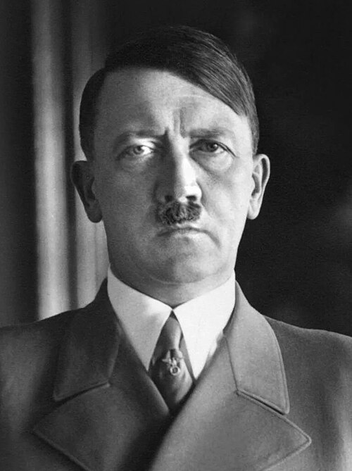

Adolf Hitler
Dictador de la Alemania nazi (1933-1945), principal instigador de la Segunda Guerra Mundial en Europa y máximo responsable del Holocausto. Su régimen totalitario, basado en el racismo, el antisemitismo y el expansionismo, provocó la muerte de decenas de millones de personas.
Datos
| Nombre completo | Adolf Hitler |
|---|---|
| Nacimiento | 20 de abril de 1889, Braunau am Inn (Austria-Hungría) |
| Fallecimiento | 30 de abril de 1945, Berlín (suicidio) |
| Cargo | Canciller (desde 1933) y Führer (1934-1945) del Tercer Reich |
| Partido | Partido Nacionalsocialista Obrero Alemán (NSDAP) |
| Cónyuge | Eva Braun (se casaron un día antes de su muerte) |
Orígenes y juventud
Adolf Hitler nació el 20 de abril de 1889 en Braunau am Inn, una pequeña localidad austriaca junto a la frontera con Alemania. Fue hijo de Alois Hitler, un funcionario de aduanas de carácter severo, y de Klara Pölzl, con quien mantuvo una relación mucho más afectuosa. La muerte de su madre, en 1907, le afectó profundamente. Varios de sus hermanos murieron en la infancia, algo común en la época.
De joven, Hitler soñaba con ser artista. Se trasladó a Viena con la intención de estudiar en la Academia de Bellas Artes, pero fue rechazado en dos ocasiones por falta de talento para el dibujo de figuras. Pasó años en la capital austrohúngara viviendo de forma precaria, vendiendo postales y acuarelas, alojándose a veces en albergues para hombres sin recursos. Fue en esa Viena cosmopolita y llena de tensiones nacionales donde, según relató después, absorbió muchas de las ideas antisemitas y pangermanistas que marcarían su vida, aunque los historiadores debaten cuánto de ese relato es reconstrucción posterior.
En 1913 se mudó a Múnich, en Baviera. Rehuía el servicio militar austrohúngaro, en parte por su desprecio hacia el carácter multiétnico del Imperio, al que oponía su admiración por una Alemania étnicamente "pura".
La Gran Guerra y la entrada en la política
Cuando estalló la Primera Guerra Mundial en 1914, Hitler se alistó como voluntario en el ejército bávaro. Sirvió como enlace (mensajero) en el Frente Occidental, un puesto peligroso, y fue condecorado con la Cruz de Hierro. La guerra dio por primera vez sentido y disciplina a su vida. La derrota alemana de 1918, que le sorprendió convaleciente de un ataque con gas, la vivió como una traición insoportable.
Hitler abrazó la teoría de la "puñalada por la espalda" (Dolchstoßlegende), según la cual Alemania no había sido vencida en el campo de batalla, sino traicionada por políticos, socialistas y judíos en la retaguardia. El humillante Tratado de Versalles, que impuso a Alemania enormes reparaciones, pérdidas territoriales y la culpa de la guerra, alimentó un resentimiento que él sabría explotar.
En 1919, todavía en el ejército, fue enviado a espiar a un pequeño grupo nacionalista, el Partido Obrero Alemán. Lejos de limitarse a observarlo, se unió a él, descubrió su enorme talento como orador y pronto lo transformó y rebautizó como Partido Nacionalsocialista Obrero Alemán (NSDAP), del que se convirtió en líder indiscutible.
El ascenso al poder
En noviembre de 1923, envalentonado por la crisis económica y la hiperinflación, Hitler intentó tomar el poder en Baviera mediante un golpe de Estado, el llamado "Putsch de la Cervecería" de Múnich. El intento fracasó estrepitosamente y varios de sus seguidores murieron. Hitler fue detenido y juzgado por alta traición, pero convirtió el juicio en una tribuna propagandística. Condenado a cinco años, cumplió apenas nueve meses en una cómoda reclusión, durante la cual dictó Mi lucha (Mein Kampf), una mezcla de autobiografía, ideología racista y programa político.
Tras salir de prisión, Hitler comprendió que debía llegar al poder por vías legales, ganando elecciones, y no por la fuerza. Durante los años veinte, con relativa prosperidad, el nazismo fue un partido marginal. Todo cambió con la Gran Depresión a partir de 1929: el desempleo masivo, la miseria y el miedo al comunismo empujaron a millones de alemanes hacia soluciones extremas.
El NSDAP creció espectacularmente en las urnas hasta convertirse en el mayor partido del Reichstag. En un contexto de inestabilidad crónica, las élites conservadoras creyeron que podrían "domesticar" a Hitler usándolo para frenar a la izquierda. El 30 de enero de 1933, el presidente Hindenburg lo nombró canciller. Fue un cálculo desastroso.
La dictadura totalitaria
Una vez en el poder, Hitler desmanteló la democracia con asombrosa rapidez. El incendio del Reichstag, en febrero de 1933, sirvió de pretexto para suspender las libertades civiles. La Ley Habilitante le otorgó poderes para gobernar por decreto. En pocos meses, los demás partidos fueron prohibidos o se disolvieron, los sindicatos fueron aplastados y Alemania se convirtió en un Estado de partido único.
En 1934, la "Noche de los Cuchillos Largos" eliminó físicamente a rivales internos y a la cúpula de las SA. A la muerte de Hindenburg ese mismo año, Hitler fusionó los cargos de presidente y canciller y se proclamó Führer, líder supremo del Estado, el partido y las fuerzas armadas, que le juraron lealtad personal.
El régimen construyó un aparato totalitario: la Gestapo (policía secreta), las SS, los campos de concentración para opositores, una propaganda omnipresente dirigida por Joseph Goebbels y un culto casi religioso a la figura del líder. Al mismo tiempo, redujo el paro con obras públicas y rearme, lo que le dio un amplio apoyo popular. Esa aparente recuperación se cimentaba, sin embargo, sobre la represión y la exclusión: desde 1933 se persiguió sistemáticamente a los judíos, y las Leyes de Núremberg (1935) los privaron de la ciudadanía (ver Sociedad).
Expansión y camino a la guerra
La política exterior de Hitler perseguía revertir Versalles y conquistar "espacio vital" (Lebensraum) para el pueblo alemán en el este de Europa. Reintrodujo el servicio militar obligatorio, remilitarizó Renania (1936) y comprobó que las democracias occidentales, temerosas de otra guerra, no reaccionaban.
En 1938 anexionó Austria (el Anschluss) y, mediante la presión y el chantaje, obtuvo en la Conferencia de Múnich la región checa de los Sudetes, con la aquiescencia de Reino Unido y Francia, que confiaban en apaciguarlo. Meses después, ocupó el resto de Checoslovaquia, demostrando que sus ambiciones no tenían límite. En agosto de 1939 sorprendió al mundo firmando un pacto de no agresión con la Unión Soviética de Stalin, que incluía el reparto secreto de Europa oriental.
Papel en la guerra
El 1 de septiembre de 1939, Hitler ordenó la invasión de Polonia, desencadenando la Segunda Guerra Mundial cuando Reino Unido y Francia le declararon la guerra. En los dos años siguientes, la Blitzkrieg le dio triunfos espectaculares: conquistó Dinamarca y Noruega, el Benelux y, en apenas seis semanas, Francia. Solo el Reino Unido resistió en la Batalla de Inglaterra, primer objetivo que Hitler no logró.
En junio de 1941 cometió la que muchos consideran su decisión más fatídica: lanzar la Operación Barbarroja contra la Unión Soviética, abriendo la guerra en dos frentes que siempre había querido evitar. Concebía la campaña del este como una guerra de aniquilación racial e ideológica. Tras los éxitos iniciales, el avance se frenó ante Moscú en el invierno de 1941, el mismo mes en que declaró la guerra a Estados Unidos tras el ataque japonés a Pearl Harbor.
A medida que la guerra se prolongaba, Hitler asumió un control cada vez más directo y rígido de las operaciones militares. Su negativa a autorizar retiradas —como en Stalingrado, donde se perdió todo un ejército— y su creciente desconfianza hacia sus generales agravaron las derrotas. Tras Kursk (1943) y el desembarco de Normandía (1944), la iniciativa pasó irremediablemente a los Aliados. En julio de 1944 sobrevivió a un atentado con bomba organizado por un grupo de oficiales (el complot del 20 de julio), tras el cual desató una brutal purga.
El Holocausto
Bajo el mandato de Hitler se planificó y ejecutó el Holocausto, el genocidio sistemático de aproximadamente seis millones de judíos europeos, además de millones de otras víctimas: gitanos, prisioneros de guerra soviéticos, personas con discapacidad, opositores políticos y otros grupos perseguidos. La invasión de la URSS marcó una escalada: los Einsatzgruppen realizaron fusilamientos masivos, y en la Conferencia de Wannsee (1942) se coordinó la mal llamada "Solución Final", con campos de exterminio equipados con cámaras de gas como Auschwitz-Birkenau o Treblinka.
Aunque Hitler evitó dejar por escrito órdenes explícitas, la responsabilidad última del exterminio recae en él y en la ideología que impuso. El Holocausto es uno de los mayores crímenes de la historia de la humanidad.
Final
En 1945, con Alemania invadida por el este y el oeste, Hitler se refugió en un búnker subterráneo en Berlín, cada vez más aislado de la realidad, dando órdenes a ejércitos que ya no existían. Con el Ejército Rojo a pocas manzanas durante la Batalla de Berlín, se casó con su compañera Eva Braun y, el 30 de abril de 1945, ambos se suicidaron. Sus cuerpos fueron incinerados siguiendo sus instrucciones. Pocos días después, Alemania capituló sin condiciones.
Legado y valoración histórica
Adolf Hitler es considerado uno de los mayores responsables de crímenes contra la humanidad de toda la historia. Su régimen provocó, directa o indirectamente, la muerte de decenas de millones de personas y sumió a Europa en la devastación. Su nombre se ha convertido en sinónimo del mal político, del totalitarismo y del genocidio.
El estudio de su figura y del ascenso del nazismo es central para comprender los peligros del extremismo, la propaganda, el racismo institucionalizado y la fragilidad de las democracias en tiempos de crisis. En Alemania y en gran parte del mundo, la exhibición de su simbología está prohibida o socialmente proscrita, y la memoria de sus víctimas se conserva como advertencia para que sus crímenes no vuelvan a repetirse.
← Volver a Líderes